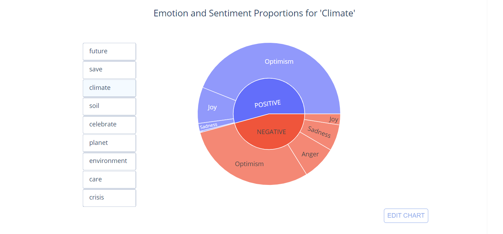

A Visual Comparison of TV Shows on Online Streaming Services like Netflix and Amazon Prime Video using Python

A comparative study using Python’s Seaborn and Matplotlib libraries to create an infographic about popular online streaming services
Tweets Scrape, Analysis, and Visualization using Pattern, Hugging Face, and Plotly #EarthDay2022

Quick Scrape — Extract — Visualize — Analyze exercise using Pre-trained NLP models for Text Analytics
Exploring News about Covid-19 in Indian Media | NLP| Wordcloud | Covid-19 Article 1

In this blog, I attempted to dig into the news articles from Indian media and visualize which words appeared using NewsAPI, NLTK and WordCloud Python libraries.
A Simple Bag-of-Words Approach for Time-Series Text Data Modelling | Covid-19 Article 2

In this article, I attempt to explore correlations between features extracted from the texts using BoW approach.